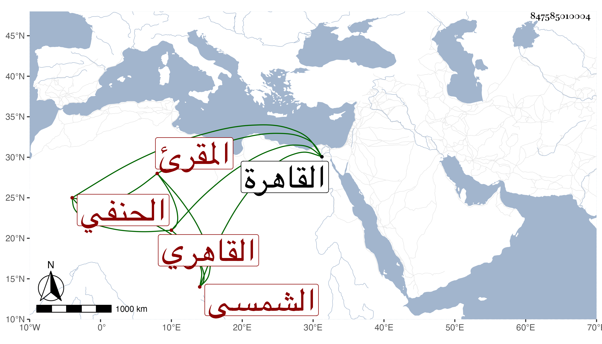

0902Sakhawi.DawLamic.ITO20230111-ara1.EIS1600.847585010004
Biography ID: 847585010004
393
محمد بن أبي بكر بن أيدغدي بن عبد الله الشمس بن السيف الشمسي القاهري الحنفي المقرئ أبوه ويعرف بابن الجندي . ولد تقريبا سنة خمس وستين وسبعمائة بالقاهرة ونشأ بها فحفظ القرآن والمجمع والألفية وغيرها ، وعرض على جماعة وسمع على النجم بن رزين والتقي بن حاتم والصلاح البلبيسي والعراقي والحلاوي والسويداوي والشهاب الجوهري والشمس الحريري إمام الصرغتمشية والشرف ابن الكويك في آخرين ، ومما سمعه على الأول والرابع البخاري بفوت المجلس الأول على ثانيهما وعلى الثاني الشفا بفوت وعلى الثالث صحيح مسلم ، واشتغل في الفقه وأصوله والعربية والفرائض والحساب وغيرها على أئمة عصره فكان من شيوخه في الفقه وغيره الجلال التباني والعز يوسف الرازي شيخ الشيخونية والسراج الهندي وحكى أنه كان يركب من الصالحية والطلبة والنواب ونحوهم بين يديه مشاة ويكون انتهاؤهم عند السيوفية وفي العربية المحب بن هشام وأشير إليه بالتقدم في العربية والبراعة في الفقه وأصوله والعلم بالفرائض والحساب والمعاني والبيان مع الخبرة بالفروسية كالرمح والدبوس والمعالجات بالمقايرات واللبخة وكذا بلعب الشطرنج وغيرها من الفضائل ، كل ذلك مع الخير والديانة والأمانة والعفة والتواضع وعدم التكثر بفضائله وحل المشكلات بدون تكلف وحسن العشرة ، ولمزيد اختصاصه بشيخنا الرشيدي ومجاورته له في السكنى بالقرب من جامع أمير حسين كان يكثر اللعب معه بالشطرنج لتقارب طبقتهما فلما مات تركه شيخنا وممن أخذ عنه العربية الشرف السبكي والخواص والشهاب الهائم المنصوري ومدحه بأبيات كتبتها في ترجمته والبدر الدميري في آخرين من الشافعية وهي مع الفقه الامشاطي والمحب الأوجاقي والشمس المحلي والد أبي الفضل والشمس الكركي وآخرون من أئمة الحنفية وحدث باليسير سمع منه الفضلاء ، وممن قرأ عليه منتقى ابن سعد من مسلم وهو أربعون حديثا التقي القلقشندي . واختصر المغني لابن هشام اختصارا حسنا متحريا فيه ابدال العبارة المنتقدة وعمل مقدمة سماها مشتهى السمع في العربية ومنتهى الجمع وهو شرحها قرأهما عليه الأمشاطي وكان عنده بخطه وكذا له الزبدة والفطرة قرأهما عليه الطلبة ومقدمة في الفرائض ومختصر في المعاني والبيان وشرح كلا منهما بل شرح المجمع في مجلدين ملتزما توضيح ما فيه من مشكل من حيث العربية لكن فقد غالبه ، وولي مشيخة المهمندارية وتدريسها وأعاد للحنفية بالظاهرية القديمة عن قاري الهداية وبالالجيهية واستقر به خشقدم في تدريس الدرس الذي جدده بجامع الأزهر ثم انتزعه منه للبدر بن عبيد الله فقرره جوهر اللالا شيخا بمدرسته التي أنشأها بالمصنع بالقرب من قلعة الجبل وضاعف له معلومه مرارا ، وولي خزانة الكتب بالأشرفية برسباي من واقفها بعد عرض مشيختها عليه حين إعراض ابن الهمام عنها فامتنع قائلا لا نأخذ وظيفة صاحبنا ، وقد حج في السنة التي كان الخيضري أمير الركب فيها ، ولم يتزوج إلا قبيل موته ، وحصل له في سمعه ثقل ، قم قبيل موته رفسه جمل فانكسرت رجله ولزم الفراش حتى مات في يوم الخميس مستهل المحرم سنة أربع وأربعين وتفرقت أوراقه بعد موته رحمه الله وإيانا .
